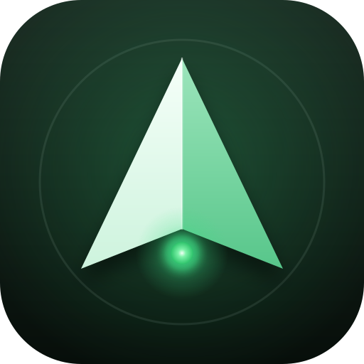

FOR SYNOLOGY DSM 6.2
NasPilot
群晖 NAS 的智能驾驶舱：状态、文件、影音、下载、桌面小组件，还能用自然语言问 NAS。
问 NAS「去年国庆拍的视频在哪」——一句话找文件、找照片、统计目录，整理方案先预览再执行，永不删除。
概览与管理在线状态、负载、存储、硬盘健康、日志、套件更新，重启关机二次确认。
文件浏览、搜索、多选、移动、复制、回收站；拍照直传、相册与文件上传。
影音原画直连或 1080p / 720p 转码，记住进度，自动连播，局域网投屏；Moments 照片时间轴。
下载HTTP / 磁力 / 种子交给 NAS，实时进度，暂停恢复。
隐私不含广告与统计 SDK；密码不落盘；内容默认不出局域网。